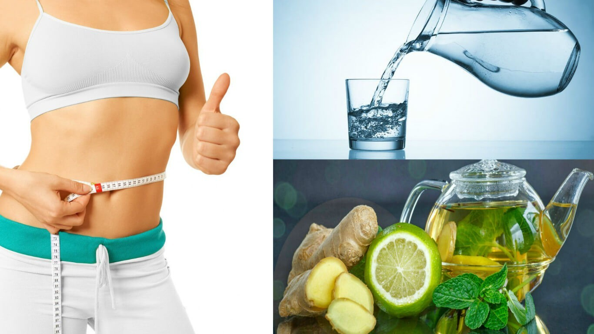
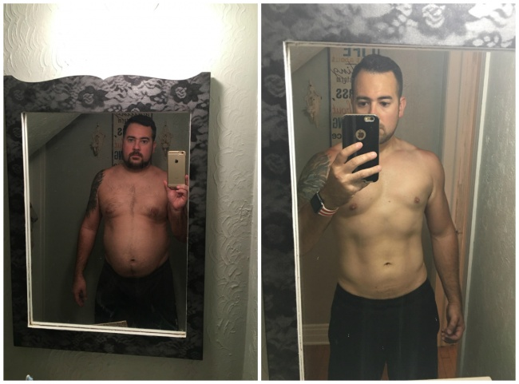

La OMS preocupada por los españoles con sobrepeso. ¡Una forma innovadora de perder peso hasta 5 kg por semana sin dieta ni deporte!
Según la OMS, más del 50% de las mujeres y los hombres de entre 35 y 50 años sufren de sobrepeso en España, y esta cifra solo está creciendo. Para 2025, la OMS predice un aumento de hasta el 65%. Los nutricionistas dieron un retrato de un español promedio que tiene sobrepeso, por lo general, se trata de personas que viven en la ciudad que comen alimentos grasos, beben alcohol o fuman. Se mueven poco y descuidan los deportes. Las personas con sobrepeso tienen más probabilidades de tener diabetes, accidente cerebrovascular, ataque cardíaco y cáncer. La obesidad afecta a todo el cuerpo como un todo, tanto externa como internamente. La grasa blanca visceral destruye el cuerpo desde el interior, envolviendo y `comiendo` los órganos internos. El corazón, los vasos sanguíneos, los pulmones, los riñones y las articulaciones son las principales víctimas de la obesidad, pero no las únicas. La obesidad no es una cuestión de belleza, es una cuestión de salud. Y muy serio.
Dr. Michael Osterholm, epidemiólogo y especialista en infecciones, profesor, director del Centro de Investigación de la Universidad de Minnesota.
Durante mucho tiempo he estudiado el problema de la obesidad en España. La OMS citó estadísticas aterradoras, ¡cada segundo español tiene sobrepeso! En la naturaleza de los españoles, lo principal es comer y beber bien y luego repetirlo.
Dr. Maria Fernanda Callejon
Médico, nutricionista, psicólogo, candidato a ciencias médicas.
En el problema del exceso de peso, se deben tener en cuenta no solo los indicadores físicos, sino también los psicológicos. Si un paciente puede recuperarse y negarse a comer comida chatarra, practicar deportes y comenzar a comer bien, otro en cambio, no podrá hacerlo, y es la mayoría de ellos. Cada persona es individual y cada problema individual de obesidad también es individual. Si un paciente engorda a partir de un estilo de vida sedentario y come porque está aburrido, otro aprovecha sus problemas o estrés con una deliciosa comida. Para otro paciente, la comida deliciosa es una recompensa, por lo que una persona se recompensa a sí misma, por ejemplo, por un día de trabajo duro o por un examen. Antes de comenzar a perder peso, necesita la ayuda de un nutricionista y un psicólogo, para que el especialista lo ayude a determinar cuál es exactamente el problema y cómo comenzar a perder peso. Durante mi trabajo, me encontré con mil casos en los que el paciente necesitaba un incentivo adicional para perder peso, o un ejemplo vívido que pudiera seguir. El suplemento muy efectivo , basado en extractos naturales y vitaminas, que ahora es muy popular en los Estados Unidos, quema con éxito grasas viscerales peligrosas, suprime el apetito, le da energía a una persona para hacer algo interesante y ayuda a distraerse de los pensamientos sobre la comida. Exactamente aconsejamos mis colegas y yo a los pacientes que no pueden perder peso por sí mismos.
Lucía Rico Rey, 37 años, resultado después de 2 meses de tomar
Estoy muy agradecida a la Dra. Maria Fernanda Callejon, por el hecho de que ella era sensible a mí y a mi problema de sobrepeso. Y cuando me pidieron que contara mi historia, por supuesto que acepté, porque ahora entiendo lo importante que es para todos los que leen este artículo darse cuenta de que puede perder peso. Es real. No siempre era gordita, como estudiante, incluso estaba en el equipo de animadoras, practicaba deportes y llevaba un estilo de vida activo. Pero luego me casé, di la luz a dos hijos y ya no había tiempo para esto. Después del segundo parto, me di cuenta de que nunca tendría un estómago plano como antes. Estaba engordando, pero no había nada que pudiera hacer al respecto. La familia se tomó todo mi tiempo y atención, comencé a levantarme y en algún momento me di cuenta de que simplemente no me podia mirar en el espejo. No quería verme a mí misma, pero cuando tenía que hacerlo, no podía contener las lágrimas. Odiaba mi cuerpo. Era fea, arrugada, panza flácida, celulitis y piel flácida. Empecé a usar ropa negra holgada para al menos de alguna manera ocultar mi cuerpo. Dejé de peinarme y me dediqué a pintar, como me encantaba. Y, por supuesto, los problemas comenzaron con mi esposo Javier, al principio simplemente dejó de mostrarme amor y ternura, y luego se escapó, se quedó en el trabajo y se reunió con amigos. Me di cuenta de que la cosa era mi exceso de peso. Después de todo, me daba asco, ¿cómo podía desearme? Pero el pico ocurrió cuando Javier y yo cenamos en un restaurante y accidentalmente conocimos a nuestro amigo común de la universidad, no me reconoció y dijo que pensaba que yo era la madre de Javier. Javier se sonrojó de ira y dijo que no, yo soy su esposa Lucía. ¡Estaba terriblemente avergonzado, me sentía como un monstruo feo que parece 20 años mayor! Después de todo, mamá de Javier tiene 55 años ... Salí corriendo de la mesa al baño, para no llorar con todos los visitantes del restaurante. ¡En el baño, me paré frente al espejo, me miré y no pude reconocer a la chica que era! Divertida, alegre, efectiva y deportiva. Es aquella de la que todos se enamoraron. Ahora en el espejo había una mujer de mediana edad con rasgos faciales hinchados, mentón doble y una barriga enorme que no podía ocultarse incluso debajo de una camiseta holgada. Me di cuenta de que necesitaba perder peso y con urgencia, de lo contrario podría volverme loca. Seguí una dieta, o más bien intenté hacerla.
Como cocinaba para toda la familia, fue muy difícil no probar lo que iba a servir a tus amados. Así que un par de sándwiches, una pasta con queso y mantequilla para la cena ... Y no pude rechazar los jugos, refrescos, vino ... Esto continuó durante unos tres meses, no hubo resultado. Incluso recuperé 3 kilogramos. Me reproché constantemente por cada caloría consumida, me reproché por ser tan débil e inútil, reprochándome por mi aspecto y por el hecho de que nunca lograría algo así. Me desesperaba, estaba al borde de una crisis nerviosa. Y decidí que me operaría para reducir el estómago, así que me puse en contacto con la Dra. Maria Fernanda Callejon
Ella me escuchó y dijo que podía perder peso sin cirugía y lograr los mismos resultados, pero no acostada debajo del cuchillo. Me opuse, porque recordaba la experiencia de la pérdida de peso independiente. Pero el doctor se mantuvo firme, me recetó tratamiento y gotas y dijo que si no empiezo a perder peso, ella me daría permiso para operarme. Estaba escéptica y la primera semana de admisión de la gotas ni siquiera me subí a la balanza y no verifiqué los resultados. ¡Pero noté que los jeans comenzaron a quedarme grandes! Me sorprendió y decidí pesarme, ¡el resultado fue menos 5 kg! ¡Y esto es en una semana! ¡Y no hice nada por esto! Llevé el mismo estilo de vida, comí todo lo que quería y me permití alcohol. ¡Pero perdí peso! Después de eso, comencé a tomarme en serio mi pérdida de peso, vi el resultado y quise guardarlo y perder aún más peso. Prácticamente rechacé las bebidas azucaradas, bebí más agua, comencé a caminar con los niños por las tardes en el parque cerca de la casa. Anteriormente, simplemente no tenía la fuerza para hacerlo, ¡pero ahora estaba llena de energía! ¡Quería salir a caminar!
La Dra. Maria Fernanda Callejon después de ver mis resultados me abrazó y dijo que estaba orgullosa de haber perdido peso sin realizar operaciones peligrosas. En 2 meses de admisión de perdí 24 kilogramos.
 Ahora, mirándome en el espejo, me veo a mí misma. ¡Esa es Lucía, que siempre he sido! Empecé a usar hermosos vestidos nuevamente, ¡me encanta cómo me veo en blanco! Experimentando con el cabello, ahora estoy pensando en el cabello más claro. Javier me mira con admiración, como antes en la universidad. Cuando me mira así, recuerdo el primer día que lo conocimos. Fue después del partido de nuestro equipo, estaba en el estadio y después de la actuación me vio y se congeló, sin quitarme los ojos de encima. Era terriblemente tímido, aunque era muy popular entre las chicas. Javier me hizo una propuesta por segunda vez, dijo que se estaba enamorando de mí con renovado vigor y quería demostrar su amor. Literalmente me lleva en sus brazos, pero no lo molesto. Sé cómo se siente tener sobrepeso y no saber cómo deshacerme de él. Tratar de perder peso, pero fallar cada vez. La desesperación comienza a reprocharte a ti mismo. Dejar de amarte e incluso de odiarte a ti mismo. Yo se como es. Y sé que necesitamos ayuda. Ese fue el tipo de ayuda de las gotas . Pasé por muchas cosas y puedo decir con confianza que estas caídas son las mejores que me han sucedido en los últimos años. Estoy muy agradecida a la Dra Maria Fernanda Callejon, por el hecho de que no me permitió realizar una operación peligrosa y me aconsejó estas gotas. Gracias Ahora parece que me siento bien por dentro. Soy hermosa y lo sé.
Ahora, mirándome en el espejo, me veo a mí misma. ¡Esa es Lucía, que siempre he sido! Empecé a usar hermosos vestidos nuevamente, ¡me encanta cómo me veo en blanco! Experimentando con el cabello, ahora estoy pensando en el cabello más claro. Javier me mira con admiración, como antes en la universidad. Cuando me mira así, recuerdo el primer día que lo conocimos. Fue después del partido de nuestro equipo, estaba en el estadio y después de la actuación me vio y se congeló, sin quitarme los ojos de encima. Era terriblemente tímido, aunque era muy popular entre las chicas. Javier me hizo una propuesta por segunda vez, dijo que se estaba enamorando de mí con renovado vigor y quería demostrar su amor. Literalmente me lleva en sus brazos, pero no lo molesto. Sé cómo se siente tener sobrepeso y no saber cómo deshacerme de él. Tratar de perder peso, pero fallar cada vez. La desesperación comienza a reprocharte a ti mismo. Dejar de amarte e incluso de odiarte a ti mismo. Yo se como es. Y sé que necesitamos ayuda. Ese fue el tipo de ayuda de las gotas . Pasé por muchas cosas y puedo decir con confianza que estas caídas son las mejores que me han sucedido en los últimos años. Estoy muy agradecida a la Dra Maria Fernanda Callejon, por el hecho de que no me permitió realizar una operación peligrosa y me aconsejó estas gotas. Gracias Ahora parece que me siento bien por dentro. Soy hermosa y lo sé.
Dr Eduardo Candellero
endocrinólogo, nutricionista, doctor en ciencias médicas

He estado observando la investigación nutricional canadiense durante mucho tiempo y sé que las gotas es un maravilloso producto natural que está diseñado para satisfacer todas las necesidades del cuerpo. Perder peso nunca ha sido tan fácil. Estas gotas deben tomarse diariamente, sin temor a la salud. Gracias a usted quemará hasta 5 kg por semana de forma completamente natural. Este es un producto completamente natural adecuado para todos, independientemente de su sexo, edad y peso. La pérdida de peso se logra al quemar grasa y no debido a la deshidratación o la pérdida de masa muscular. Este es un producto único que ayudará a quemar grasa visceral peligrosa y a normalizar todas las funciones del cuerpo. Las gotas hace mucho tiempo han ganado popularidad en Occidente y ahora están ganando popularidad en España. Personalmente, recomiendo este producto a todos mis pacientes, y todos me agradecen por lograr un cuerpo sano y delgado.
¿Qué es ?
Las gotas es un complejo 100% natural que combate con éxito las grasas viscerales peligrosas y normaliza todos los procesos en el cuerpo humano. Lo que contribuye a la pérdida de peso saludable. Se ha demostrado clínicamente que acelera el metabolismo, restaura la actividad del sistema endocrino, mejora la inmunidad, estimula la regeneración de los tejidos y suprime el hambre.
Las gotas contienen todos los oligoelementos necesarios que contribuyen a la quema intensiva de grasa incluso en las áreas más problemáticas. ¡La tasa de quema de grasa aumenta 10 veces!
Esta herramienta no solo reduce el peso de manera efectiva, sino que también cura y rejuvenece el cuerpo desde adentro.
Principales propiedades de :
- Quema de grasa
- Control del apetito
- Normalización del fondo hormonal.
- Aumento de la inmunidad
- Rejuvenecimiento y limpieza del cuerpo
- Efecto tónico
Alejandro Contreras, 45 años, resultado después de 28 días de admisión de

A mi me recomendó el entrenador del gimnasio donde voy. Él vio cómo día tras día me atormentaba, tratando de perder peso y no tenia éxito. La barriga que adquirí durante una larga estadía en casa no desapareció y parece que ni siquiera lo haría. No siempre fui un tipo delgado, pero con la edad, mi metabolismo se desaceleró por completo. Si antes podía comer pollo frito todos los días y beber cerveza fría, ahora de los alimentos grasos tengo problemas estomacales y gastritis. Por eso empecé a tomar , porque, en primer lugar, es un producto natural, sin química dañina, y en segundo lugar, proporciona un resultado comprobado sin dañar la salud. En nuestra sala, casi todos toman este suplemento y todos están contentos. Dicen que el cuerpo se siente mejor. Porque además de perder peso, también compensa la necesidad diaria de una persona de minerales y vitaminas. En una palabra, solo beneficios. Y los hombres son aún mejores porque puedes desarrollar músculo sin secarte y sin abstinencia en los alimentos. Durante el mes de ingesta, perdí 6 kilogramos, mejoré la calidad del cuerpo, eliminando la grasa. Gracias al entrenador por compartir una forma comprobada de perder peso. Ahora recomiendo a cualquier persona con sobrepeso.
Silvia Cardenas, 63 años, resultado después de 5 meses de admisión de

Las gotas se convirtieron para mí en una verdadera salvación. Comencé a tener serios problemas de salud con la edad y estaba constantemente enfermo. Los médicos atribuyeron todo a mi edad y al exceso de peso. Con una altura de 1.65, pesaba 113 kilogramos. Mis piernas no podían soportar este peso, tuve terribles problemas con las articulaciones y los vasos sanguíneos. Oh, con que no tuve problemas. Iba al hospital como si fuera al trabajo, olvidé lo qué es una vida sin preocupaciones. Ni siquiera podía sentarme con mis nietos, ayudar a mi hija ... Las gotas me aconsejó mi nutricionista, dijo que a mi edad será muy difícil perder peso por mi cuenta y que se necesita ayuda urgente. Le creí al médico y ordené gotas en el sitio web oficial del fabricante, fue hace mucho tiempo y solo pude ordenar con la ayuda de un sobrino que vivia en EEUU. Comencé a perder peso de inmediato, después de una semana de tomarlo, ya noté el resultado. Y después de un mes se me hizo más fácil caminar y respirar. Luego bajé ya 12 kilogramos. Ahora mi peso es de 77 kilogramos y me siento genial. Mi dieta no ha cambiado, el problema no estaba en la dieta, sino en el hecho de que el cuerpo simplemente dejó de absorber cosas útiles y comenzó a acumular grasa. Y las gotas dispersaron la digestión y quemaron grasas peligrosas. Muchas gracias a mi médico por recetar estas gotas a tiempo. Sin ellos, definitivamente no habría perdido peso.
Por razones de seguridad, todas las parcelas se desinfectan y solo después de eso se envían al destinatario.
Todas las manipulaciones con los productos se llevan a cabo en trajes especiales de protección. Cumplimos con todos los requisitos del Ministerio de Salud.
Compártelo


Noticias
-
- Las estrellas estadounidenses compartieron el secreto de cómo perder peso rápidamente.

-
- ¡Los científicos han encontrado una herramienta que quema grasa en una semana!

-
- ¡Cuerpo sano y delgado sin dietas ni deportes! Método único

Etiquetas asociadas a esta página
Comentarios:
Wow! La historia de Lucía me conmovió. Es tan vital y triste. Gracias por compartir esta historia, ¡necesitan hacer una película sobre ella! También comencé a tener problemas con el metabolismo con la edad, ciertamente no di la luz, pero tengo una panza de cerveza. Había leído sobre estas gotas, que todas las estrellas de Hollywood toman para perder peso rápidamente para el papel. Al menos leí sobre estas gotas de un entrenador famoso en Twitter y decidí probarlas. El resultado es menos 23 kg. Me siento genial Era como si comenzara a vivir una vida diferente, más exitosa y llena de acontecimientos que la que tenía cuando era un hombre gordo.
¡Ni siquiera hice dieta! Simplemente limite los carbohidratos y comence a comer más vegetales. Pero con estas gotas, casi perdí el apetito y no quería dulces en absoluto. En resumen, ¡lo recomiendo!

¡Sobre el hecho de que es imposible quemar grasa! Si! Permanezco constantemente en el gimnasio y el resultado es cero. El abdomen no se va, excepto que tengo mas voluminosos los hombros. Debo probar estas gotas.
Manuel, con las gotas el proceso de ganar masa muscular será más rápido y seguro para el cuerpo. Las gotas también ayudarán a quemar la grasa visceral en el estómago, que no desaparece del esfuerzo físico.
Saludos cordiales, Dr Eduardo Candellero
Tengo grandes problemas de salud debido al sobrepeso. Consulté con el médico acerca de estas gotas y la próxima semana comenzaré a tomarlas. ¡Deséame buena suerte!
He estado tomando gotas durante 2 semanas y hasta ahora - 4 kg. Todo parece funcionar.
Tomamos las gotas junto con mi esposo! Y ni siquiera por el hecho de que necesitamos perder peso, sino porque las gotas tienen una composición natural maravillosa, y en una porción de las gotas contiene la dosis diaria para una persona de todo lo útil. Las gotas hicieron un gran trabajo con mi grasa, después del segundo embarazo y con la grasa de mi esposo, a quien alimenté mientras estábamos sentados en casa con toda la familia.
Mi esposa compró estas gotas con la pista de que es hora de cuidarme. Creo que realmente necesitamos hacer algo. Las gotas definitivamente harán algo mejor. El artículo me inspiró, gracias.
Perdí 5 kg en una semana y media. ¡No esperaba tal resultado! ¡Y las fuerzas se han vuelto realmente más! Quiero cuidarme, comenzar a hacer algo y no solo acostarme en el sofá después del trabajo. Guay! Comenzó de sentirme mejor.

¡Pobre Lucía! Ella dio a luz a dos hijos, ¡y su esposo tampoco estaba satisfecho con su cuerpo! Dejemos que los hombres traten de dar a luz y no aumenten de peso durante el embarazo, ¡y los culparemos por comer!
Mi novio perdió peso gracias a estas gotas y diré que comencé a amarlo aún más. Por supuesto, suena horrible, pero sin un estómago caído me atrae más =)
¿Es cierto que el medicamento ahora tiene un descuento del 50%?
Fernanda, si, ahora en el sitio web oficial del fabricante de se puede comprar con un descuento del 50%.
Saludos cordiales, Dr Eduardo Candellero
Porque no venden en farmacias? Es un producto muy efectivo, ¿por qué no puedo comprar las gotas en la farmacia más cercana?
Carlos, porque las farmacias comerciales hacen un gran margen en el producto y su costo aumenta varias veces. En el sitio web oficial del fabricante, puede comprar un producto original y seguro al precio más bajo, ahora con un descuento del 50%.
Saludos cordiales, Dr Eduardo Candellero
¡Estas gotas me salvaron la vida! Los médicos dijeron que necesito perder peso urgentemente o comenzaré a tener complicaciones cardíacas. Tenía que hacer algo con urgencia. Y la única decisión correcta fue comprar gotas . Estoy perdiendo peso lentamente, pero seguramente y aún mejor para mi salud.

¡Mi mamá bebió estas gotas y ahora tengo un nuevo papá! Yo culpo por todo a =)
Realmente perdí peso! Gracias a Internet conocí estas gotas. El estómago se fue en solo una semana. Comencé a sentirme liviana y hermosa! Probé mucho de todo, desde suplementos, pero comencé a perder peso solo con .
siempre hay en nuestra casa! Con la ayuda de estas gotas, mi madre y mi hermana mayor perdieron peso, quien estaba compleja con respecto a su peso y me culpó de que la había alimentado tanto. Entonces para nuestra familia se convirtió en una verdadera salvación! Y no temo por la salud de mi familia, porque estoy segura de la composición natural de las gotas.
¿Por qué es necesario ser delgada y hermosa? Tengo 1,75 cm de altura, peso 99 kg y me siento genial. No entiendo toda esta obsesión con la belleza y la apariencia.
Liliana, es genial que te sientas bien. Después de todo, el problema de la obesidad es principalmente una cuestión de salud, no de belleza. La grasa blanca visceral es peligrosa para su salud y le aconsejo que se haga pruebas y descubra el porcentaje de grasa en su cuerpo. Si quieres perder peso y reducir la proporción de grasa en el cuerpo, entonces las gotas es un maravilloso producto natural que ayudará a que el cuerpo vuelva a la normalidad, queme grasas y acelere el metabolismo.
Saludos cordiales, Dr Eduardo Candellero
Gracias por el dato. Sí, estoy más interesada en el porcentaje de grasa corporal que tengo. Pero leí en alguna parte que si el cuerpo es proporcional, es decir, no hay un abdomen enorme, entonces todo está en orden.
Liliana, es mejor contactar a especialistas y averiguarlo con seguridad. No te lleva mucho tiempo.
Saludos cordiales, Dr Eduardo Candellero
Doctor, dígame, ¿se pueden tomar gotas inmediatamente después del dar la luz? Di la luz hace unos meses y ahora mi cuerpo está en pésimas condiciones.
Soraya, las gotas no tienen efectos secundarios ya que es un producto 100% natural, sin aditivos químicos. Pero si está en período de lactancia, es mejor consultar con su médico tratante.
Saludos cordiales, Dr Eduardo Candellero
¡Perdí 15 kg con estas gotas! Estoy encantada!
¡Con la ayuda de estas gotas, mi amigo perdió peso y se balanceó como si fuera al campeonato de culturismo! Esto es asombroso. No admitió durante mucho tiempo que estaba tomando, pero aún así descubrí su secreto. Ahora tomo gotas yo mismo y hasta ahora menos 6 kg. Me gusta todo
Gran producto. Se lo recomiendo a todos.